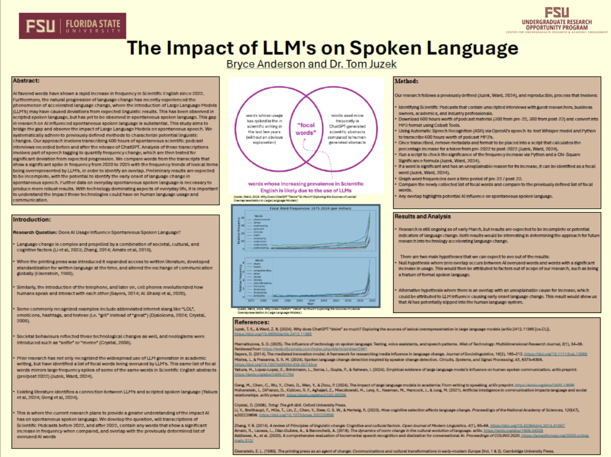

Bryce Anderson
Riley Galpin
Dr. Tom Juzek (Research Supervisor)
Florida State University (FSU)
Introduction
Language change is complex and propelled by a combination of societal, cultural, and cognitive factors. The introduction of technology has been a catalyst for the natural progression of language change. When the printing press was introduced it expanded access to written literature, developed standardization for written language at the time, and altered the exchange of communication globally. Similarly, the introduction of the telephone, and later on, cell phones revolutionized how humans speak and interact with each other. As a result, language adapted and changed to accommodate these new technologies. Some commonly recognized examples include abbreviated internet slang like “LOL”, emoticons, hashtags, and textese (i.e. “gr8” instead of “great”). Societal behaviours reflected these technological changes as well, and neologisms were introduced such as “selfie” or “meme”. Currently, Large Language Models are following this pattern of new technology introductions accelerating language change, in both written and spoken forms. Prior research has not only recognized the widespread use of LLM generation in academic writing, but have identified a list of focal words being overused by LLM’s. This same list of focal words mirrors large frequency spikes of some of the same words in Scientific English abstracts (pre/post 2022). The aforementioned research illustrates the connection between LLM influence on Scientific English, but it doesn’t stop there. Existing literature identifies a connection between LLM’s and scripted spoken language.
Paper
Abstract
AI favored words have shown a rapid increase in frequency in Scientific English since 2022. Furthermore, the natural progression of language change has recently experienced the phenomenon of accelerated language change, where the introduction of Large Language Models (LLM’s) may have caused deviations from expected linguistic results. This has been observed in scripted spoken language, but has yet to be observed in spontaneous spoken language. This gap in research on AI influenced spontaneous spoken language is substantial. This study aims to bridge the gap and observe the impact of Large Language Models on spontaneous speech. We systematically adhere to previously defined methods to characterize potential linguistic changes. Our approach involves transcribing 600 hours of spontaneous scientific podcast interviews recorded before and after the release of ChatGPT. Analysis of these transcriptions involves part of speech tagging to quantify frequency change, which are then tested for significant deviation from expected progression. We compare words from the transcripts that show a significant spike in frequency from 2020 to 2025 with the frequency trends of lexical items being overrepresented by LLM’s, in order to identify an overlap. Preliminary results are expected to be incomplete, with the potential to identify the early onset of language change in spontaneous speech. Further data on everyday spontaneous spoken language is necessary to produce more robust results. With technology dominating aspects of everyday life, it is important to understand the impact these technologies could have on human language usage and communication.
Download
You can download the dataset and explore more about linguistic acceptability.
Download